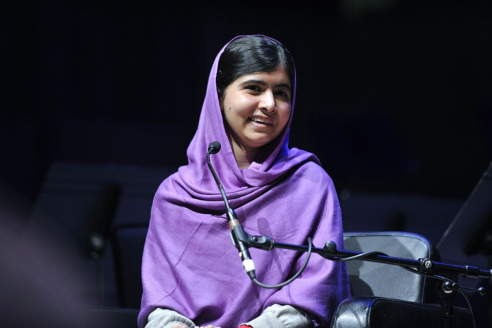

Education for every girl
Malala argues that twelve years of free, safe and quality schooling is a right, not a privilege.
The girl who stood up for education and changed the world.
Activist, author, Nobel laureate. At 15 she was shot for going to school. At 17 she became the youngest person ever to win the Nobel Peace Prize.
Read her story
Malala Yousafzai was born on July 12, 1997, in Mingora, Pakistan. Growing up in the Swat Valley, her father, an education advocate himself, ran a learning institution. When the Taliban took control of the region, they banned girls from attending school. Malala, fiercely passionate about learning, began writing an anonymous blog for the BBC detailing her life under their regime and her enduring desire to receive an education.
Her vocal activism made her a target. In October 2012, a masked gunman boarded her school bus and shot her in the head. She survived the assassination attempt, undergoing multiple surgeries and months of rehabilitation in the United Kingdom. Instead of silencing her, the attack amplified her voice on a global scale.
Recovering in Birmingham, Malala chose not to retreat. In 2013 she and her father founded the Malala Fund, and on her sixteenth birthday she spoke at the United Nations, calling on world leaders to put education first. Her message was never about revenge; she said repeatedly that she wanted every child, including those who once threatened her, to have a chance to learn.
Today, Malala is a global symbol of peaceful protest. Through the Malala Fund, she continues to campaign for the right of every girl to receive 12 years of free, safe, and quality education, transforming her personal tragedy into a worldwide movement. Her story reminds us that courage can begin with something as simple as a notebook and a voice.
"One child, one teacher, one book, one pen can change the world."
Select any year to read more.
Malala was born into a family that valued learning. Her father ran a school, and she grew up surrounded by classrooms, books and teachers.
Writing as "Gul Makai", she described daily life under Taliban rule and her fear that her school would close. The diary brought international attention to what was happening in Swat.
Awarded Pakistan's first National Youth Peace Prize in recognition of her courage and advocacy.
Shot on her school bus in October, she was flown to the United Kingdom for emergency treatment and a long recovery. Messages of support arrived from around the world.
On her sixteenth birthday she addressed the United Nations, co-authored the international bestseller "I Am Malala", and co-founded the Malala Fund with her father.
Became the youngest recipient of the Nobel Peace Prize, sharing it with child-rights campaigner Kailash Satyarthi.
Named the youngest-ever United Nations Messenger of Peace, with a focus on girls' education.
Completed her degree in Philosophy, Politics, and Economics at Oxford University.
The Malala Fund works with local educators and activists in countries such as Afghanistan, Pakistan, Nigeria and Brazil, supporting the people who understand their communities best. Malala's example has inspired students, teachers and governments to take girls' education seriously, and her story continues to prompt a simple question: what would the world look like if every girl could learn?
This page honours her courage and her belief that change can start with one voice.